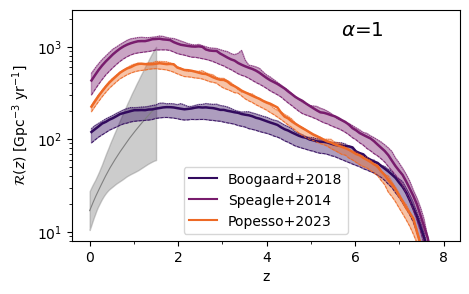
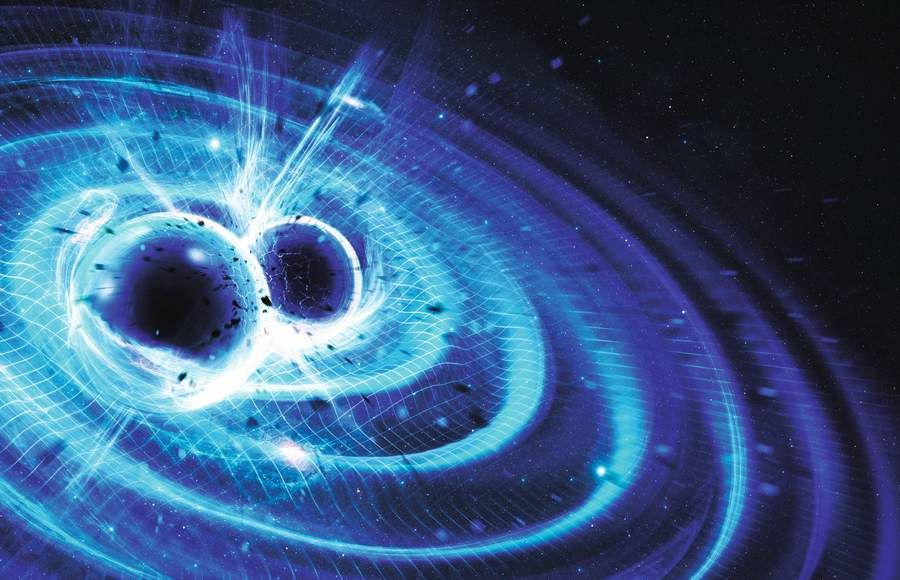

This study investigates the impact of a metal-dependent star formation rate (SFR) on the binary black hole (BBH) merger rate. By adopting the most up-to-date metal-dependent SFR, state-of-the-art binary population synthesis codes find a BBH merger rate density higher than that inferred from gravitational-wave data. The results suggest that the discrepancy in merger rate densities is likely due to limitations in stellar evolution models or BBH formation channels, rather than the SFR treatment itself.
I am a theoretical and computational astrophysicist with a focus on the formation, evolution, and gravitational-wave emissions of binary compact objects, including neutron stars and black holes. My research blends advanced modeling techniques and statistical analysis to understand how these systems evolve across cosmic time and interact with their environments. A key focus of my work has been the study of pulsars, particularly those in binary systems, exploring their properties and comparing theoretical models with observations. Additionally, I am passionate about developing innovative numerical tools to enhance the precision and efficiency of simulations in astrophysics, aiming to push the boundaries of our understanding of the universe.
Binary black hole mergers across cosmic time
Sgalletta et al. 2024

Modeling the galactic binary neutron star population

Sgalletta et al. 2023
This study explores the population of Galactic binary neutron stars (BNSs) using an updated version of the SEVN population synthesis code, which models the spin evolution of pulsars. By analyzing key parameters such as merger rate, orbital period, eccentricity, and spin period, the research provides insights into the BNS population in our Galaxy.